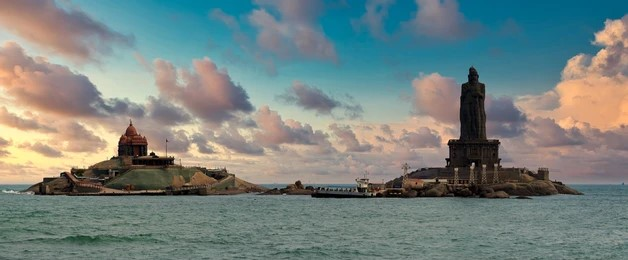

Kanniyakumari

About Kanniyakumari
- Geographical Significance:Kanyakumari, formerly known as Cape Comorin, is a coastal town situated at the southernmost tip of the Indian Peninsula, where the Arabian Sea, the Bay of Bengal, and the Indian Ocean meet. It marks the confluence of the three major bodies of water, making it a unique geographical location.
- Spiritual Destination: Kanyakumari is renowned for its spiritual significance and is often visited by pilgrims and tourists alike. The town is home to the iconic Vivekananda Rock Memorial, built on a rock island around 500 meters off the mainland, dedicated to Swami Vivekananda, who meditated here. Another notable site is the Kanyakumari Temple dedicated to the goddess Devi Kanya Kumari.
- Historical Heritage:The region has a rich historical heritage, with references dating back to ancient and medieval times. It was an important center for trade and commerce during the reign of various South Indian dynasties, including the Cholas, Cheras, and Pandiyas. The area also has remnants of colonial influence, including structures built by the British and Portuguese.
- Cultural Diversity:Kanyakumari is known for its cultural diversity, with influences from various traditions and communities. The town hosts festivals and events throughout the year, celebrating religious, cultural, and artistic expressions. The diversity is also reflected in the cuisine, which offers a blend of South Indian, Tamil, and coastal flavors.
- Natural Beauty:Beyond its spiritual and historical significance, Kanyakumari is celebrated for its breathtaking natural beauty. Visitors can enjoy stunning sunrise and sunset views over the horizon, where the sky meets the sea. The pristine beaches, rocky cliffs, and lush greenery add to the charm of the landscape